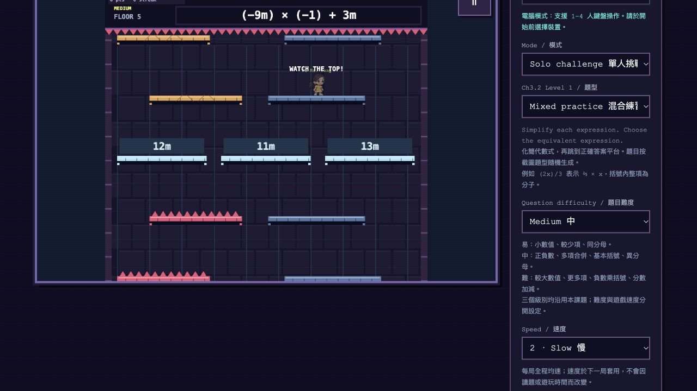
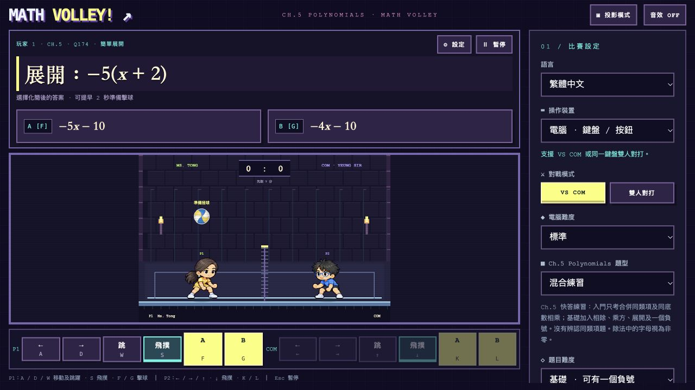
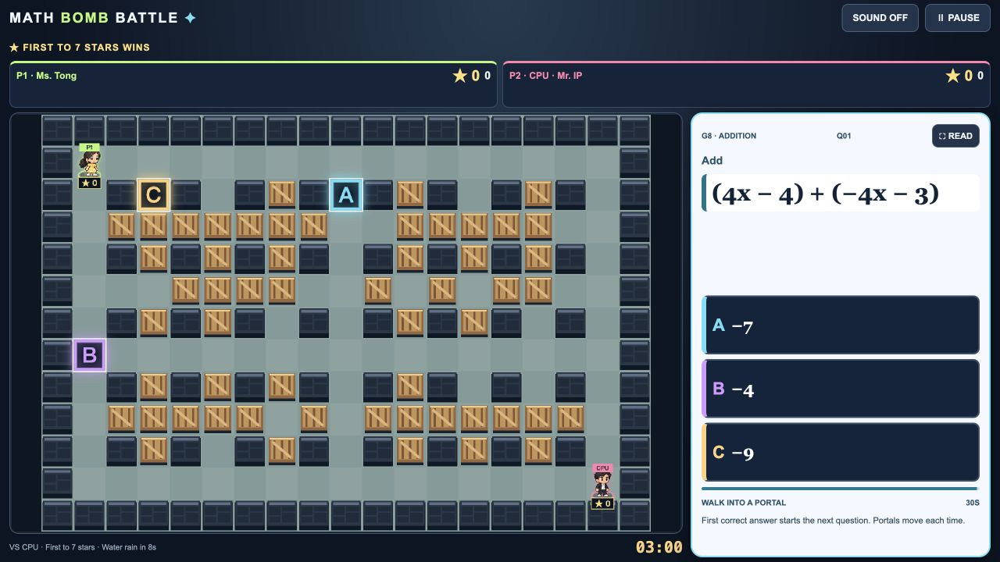

實際遊戲畫面ALGEBRA QUEST
Math Down!
化簡代數式，跳落答案平台；避開尖刺，留意移動平台。
- 練習
- 合併同類項、去括號、分數代數式等
- 人數
- 電腦 1–4 人；觸控單人
- 操作
- ⌨ Keyboard · Touch

實際遊戲畫面化簡代數式，跳落答案平台；避開尖刺，留意移動平台。

實際遊戲畫面解多項式、移到球旁、揀答案擊球。與電腦或同學來一場排球對戰。

實際遊戲畫面閃避水彈，解多項式，再走進 A／B／C 答案傳送門。
 浮島上的指導老師
浮島上的指導老師選擇運算，瞄準數字，兩邊一起做；在方程下降前解開答案。
↗ 遊戲在新分頁開啟，研究所會留在原本分頁。